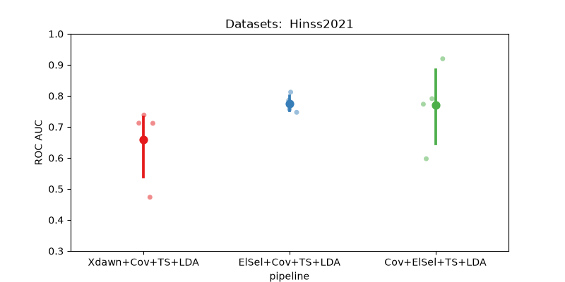

Note
Go to the end to download the full example code.
Hinss2021 classification example#
This example shows how to use the Hinss2021 dataset with the resting state paradigm.
In this example, we aim to determine the most effective channel selection strategy
for the moabb.datasets.Hinss2021 dataset.
The pipelines under consideration are:
Xdawn
Electrode selection based on time epochs data
Electrode selection based on covariance matrices
# License: BSD (3-clause)
import warnings
import numpy as np
import seaborn as sns
from matplotlib import pyplot as plt
from pyriemann.channelselection import ElectrodeSelection
from pyriemann.estimation import Covariances
from pyriemann.spatialfilters import Xdawn
from pyriemann.tangentspace import TangentSpace
from sklearn.base import BaseEstimator, TransformerMixin
from sklearn.discriminant_analysis import LinearDiscriminantAnalysis as LDA
from sklearn.pipeline import make_pipeline
from moabb import set_log_level
from moabb.datasets import Hinss2021
from moabb.evaluations import CrossSessionEvaluation
from moabb.paradigms import RestingStateToP300Adapter
# Suppressing future and runtime warnings for cleaner output
warnings.simplefilter(action="ignore", category=FutureWarning)
warnings.simplefilter(action="ignore", category=RuntimeWarning)
set_log_level("info")
Create util transformer#
Let’s create a scikit transformer mixin, that will select electrodes based on the covariance information
class EpochSelectChannel(TransformerMixin, BaseEstimator):
"""Select channels based on covariance information."""
def __init__(self, n_chan, cov_est):
self._chs_idx = None
self.n_chan = n_chan
self.cov_est = cov_est
def fit(self, X, _y=None):
# Get the covariances of the channels for each epoch.
covs = Covariances(estimator=self.cov_est).fit_transform(X)
# Get the average covariance between the channels
m = np.mean(covs, axis=0)
# Select the `n_chan` channels having the maximum covariances.
indices = np.unravel_index(
np.argpartition(m, -self.n_chan, axis=None)[-self.n_chan :], m.shape
)
# We will keep only these channels for the transform step.
self._chs_idx = np.unique(indices)
return self
def transform(self, X):
return X[:, self._chs_idx, :]
Initialization Process#
Define the experimental paradigm object (RestingState)
Load the datasets
Select a subset of subjects and specific events for analysis
# Here we define the mne events for the RestingState paradigm.
events = {"easy": 2, "diff": 3}
# The paradigm is adapted to the P300 paradigm.
paradigm = RestingStateToP300Adapter(events=events, tmin=0, tmax=0.5)
# We define a list with the dataset to use
datasets = [Hinss2021()]
# To reduce the computation time in the example, we will only use the
# first two subjects.
n__subjects = 2
title = "Datasets: "
for dataset in datasets:
title = title + " " + dataset.code
dataset.subject_list = dataset.subject_list[:n__subjects]
Create Pipelines#
Pipelines must be a dict of scikit-learning pipeline transformer.
pipelines = {}
pipelines["Xdawn+Cov+TS+LDA"] = make_pipeline(
Xdawn(nfilter=4), Covariances(estimator="lwf"), TangentSpace(), LDA()
)
pipelines["Cov+ElSel+TS+LDA"] = make_pipeline(
Covariances(estimator="lwf"), ElectrodeSelection(nelec=8), TangentSpace(), LDA()
)
# Pay attention here that the channel selection took place before computing the covariances:
# It is done on time epochs.
pipelines["ElSel+Cov+TS+LDA"] = make_pipeline(
EpochSelectChannel(n_chan=8, cov_est="lwf"),
Covariances(estimator="lwf"),
TangentSpace(),
LDA(),
)
Run evaluation#
Compare the pipeline using a cross session evaluation.
# Here should be cross-session
evaluation = CrossSessionEvaluation(paradigm=paradigm, datasets=datasets, overwrite=False)
results = evaluation.process(pipelines)
This is nemar-py 0.3.3.
Preparing to download nm000343 from https://data.nemar.org/
Retrieving 20 of 491 manifest files (16 concurrent downloads).
S3: 0%| | 0.00/193M [00:00<?, ?B/s]
S3: 1%| | 1.00M/193M [00:00<01:01, 3.28MB/s]
S3: 11%|█▏ | 22.0M/193M [00:00<00:02, 69.1MB/s]
S3: 39%|███▊ | 74.6M/193M [00:00<00:00, 213MB/s]
S3: 67%|██████▋ | 128M/193M [00:00<00:00, 317MB/s]
S3: 88%|████████▊ | 169M/193M [00:00<00:00, 337MB/s]
S3: 100%|██████████| 193M/193M [00:01<00:00, 198MB/s]
Overall: 0%| | 0.00/7.26k [00:00<?, ?B/s]
Overall: 13%|█▎ | 958/7.26k [00:00<00:02, 2.21kB/s]
Overall: 47%|████▋ | 3.42k/7.26k [00:00<00:00, 7.04kB/s]
Finished downloading nm000343 v1.0.3.
0%| | 0.00/181M [00:00<?, ?B/s]
0%| | 12.3k/181M [00:00<30:17, 99.6kB/s]
0%| | 88.1k/181M [00:00<07:57, 379kB/s]
0%| | 176k/181M [00:00<06:18, 477kB/s]
0%| | 283k/181M [00:00<05:51, 515kB/s]
0%| | 534k/181M [00:00<03:37, 830kB/s]
0%|▏ | 877k/181M [00:00<02:33, 1.17MB/s]
1%|▏ | 1.07M/181M [00:01<02:40, 1.12MB/s]
1%|▎ | 1.27M/181M [00:01<02:46, 1.08MB/s]
1%|▎ | 1.48M/181M [00:01<02:45, 1.09MB/s]
1%|▎ | 1.74M/181M [00:01<02:33, 1.17MB/s]
1%|▍ | 1.94M/181M [00:01<02:44, 1.09MB/s]
1%|▍ | 2.12M/181M [00:02<02:52, 1.04MB/s]
1%|▍ | 2.38M/181M [00:02<02:37, 1.13MB/s]
1%|▌ | 2.69M/181M [00:02<02:19, 1.27MB/s]
2%|▌ | 2.90M/181M [00:02<02:26, 1.22MB/s]
2%|▋ | 3.25M/181M [00:02<02:08, 1.38MB/s]
2%|▋ | 3.41M/181M [00:03<02:25, 1.22MB/s]
2%|▊ | 3.66M/181M [00:03<02:23, 1.24MB/s]
2%|▊ | 3.90M/181M [00:03<02:22, 1.24MB/s]
2%|▉ | 4.23M/181M [00:03<02:08, 1.38MB/s]
2%|▉ | 4.47M/181M [00:03<02:11, 1.35MB/s]
3%|▉ | 4.67M/181M [00:04<02:21, 1.25MB/s]
3%|█ | 4.90M/181M [00:04<02:24, 1.22MB/s]
3%|█ | 5.16M/181M [00:04<02:19, 1.26MB/s]
3%|█▏ | 5.47M/181M [00:04<02:08, 1.36MB/s]
3%|█▏ | 5.73M/181M [00:04<02:08, 1.36MB/s]
3%|█▏ | 5.88M/181M [00:05<02:08, 1.36MB/s]
3%|█▎ | 6.02M/181M [00:05<02:09, 1.36MB/s]
3%|█▎ | 6.18M/181M [00:05<02:30, 1.17MB/s]
4%|█▎ | 6.37M/181M [00:05<02:36, 1.11MB/s]
4%|█▍ | 6.67M/181M [00:05<02:19, 1.25MB/s]
4%|█▍ | 7.01M/181M [00:05<02:02, 1.42MB/s]
4%|█▌ | 7.30M/181M [00:06<01:59, 1.45MB/s]
4%|█▌ | 7.65M/181M [00:06<01:51, 1.55MB/s]
4%|█▋ | 7.84M/181M [00:06<02:05, 1.38MB/s]
5%|█▋ | 8.20M/181M [00:06<01:53, 1.53MB/s]
5%|█▊ | 8.37M/181M [00:06<02:10, 1.32MB/s]
5%|█▊ | 8.50M/181M [00:07<02:53, 995kB/s]
5%|█▊ | 8.64M/181M [00:07<03:07, 918kB/s]
5%|█▉ | 8.97M/181M [00:07<02:31, 1.13MB/s]
5%|█▉ | 9.29M/181M [00:07<02:12, 1.29MB/s]
5%|██ | 9.77M/181M [00:07<01:44, 1.63MB/s]
6%|██ | 10.0M/181M [00:08<01:53, 1.51MB/s]
6%|██▏ | 10.2M/181M [00:08<02:10, 1.31MB/s]
6%|██▏ | 10.4M/181M [00:08<02:14, 1.27MB/s]
6%|██▏ | 10.6M/181M [00:08<02:23, 1.19MB/s]
6%|██▎ | 11.0M/181M [00:08<01:57, 1.44MB/s]
6%|██▎ | 11.2M/181M [00:09<02:09, 1.31MB/s]
6%|██▍ | 11.4M/181M [00:09<02:18, 1.23MB/s]
6%|██▍ | 11.6M/181M [00:09<02:14, 1.26MB/s]
7%|██▍ | 11.8M/181M [00:09<02:22, 1.19MB/s]
7%|██▌ | 12.0M/181M [00:09<02:28, 1.14MB/s]
7%|██▌ | 12.2M/181M [00:10<02:33, 1.10MB/s]
7%|██▌ | 12.5M/181M [00:10<02:26, 1.15MB/s]
7%|██▋ | 12.7M/181M [00:10<02:22, 1.18MB/s]
7%|██▋ | 13.0M/181M [00:10<02:16, 1.23MB/s]
7%|██▊ | 13.2M/181M [00:10<02:23, 1.17MB/s]
7%|██▊ | 13.4M/181M [00:10<02:29, 1.12MB/s]
8%|██▊ | 13.6M/181M [00:11<02:23, 1.17MB/s]
8%|██▉ | 13.9M/181M [00:11<02:16, 1.22MB/s]
8%|██▉ | 14.0M/181M [00:11<02:37, 1.06MB/s]
8%|██▉ | 14.2M/181M [00:11<02:39, 1.04MB/s]
8%|███▏ | 15.2M/181M [00:11<01:05, 2.52MB/s]
9%|███▍ | 16.6M/181M [00:11<00:33, 4.85MB/s]
10%|███▊ | 18.2M/181M [00:12<00:21, 7.42MB/s]
11%|████ | 19.2M/181M [00:12<00:23, 6.87MB/s]
11%|████▏ | 20.0M/181M [00:12<00:32, 5.02MB/s]
11%|████▎ | 20.7M/181M [00:12<00:35, 4.53MB/s]
12%|████▍ | 21.2M/181M [00:13<00:45, 3.52MB/s]
12%|████▌ | 21.7M/181M [00:13<00:43, 3.69MB/s]
12%|████▋ | 22.3M/181M [00:13<00:44, 3.53MB/s]
13%|████▊ | 22.9M/181M [00:13<00:40, 3.94MB/s]
13%|████▉ | 23.4M/181M [00:13<00:46, 3.42MB/s]
13%|████▉ | 23.8M/181M [00:13<00:44, 3.53MB/s]
13%|█████ | 24.2M/181M [00:13<00:41, 3.77MB/s]
14%|█████▏ | 24.6M/181M [00:14<00:49, 3.17MB/s]
14%|█████▎ | 25.3M/181M [00:14<00:39, 3.89MB/s]
14%|█████▍ | 25.7M/181M [00:14<00:51, 3.04MB/s]
14%|█████▍ | 26.1M/181M [00:14<00:56, 2.76MB/s]
15%|█████▌ | 26.6M/181M [00:14<00:50, 3.05MB/s]
15%|█████▋ | 27.0M/181M [00:14<00:48, 3.19MB/s]
15%|█████▋ | 27.3M/181M [00:14<00:52, 2.92MB/s]
16%|█████▉ | 28.2M/181M [00:15<00:36, 4.18MB/s]
17%|██████▌ | 31.1M/181M [00:15<00:14, 10.2MB/s]
19%|███████ | 33.6M/181M [00:15<00:10, 14.0MB/s]
20%|███████▋ | 36.6M/181M [00:15<00:07, 18.4MB/s]
22%|████████▌ | 40.6M/181M [00:15<00:05, 24.2MB/s]
24%|█████████ | 43.2M/181M [00:15<00:13, 10.3MB/s]
25%|█████████▍ | 45.1M/181M [00:17<00:30, 4.45MB/s]
26%|█████████▊ | 46.5M/181M [00:17<00:34, 3.93MB/s]
26%|█████████▉ | 47.6M/181M [00:18<00:38, 3.47MB/s]
27%|██████████▏ | 48.4M/181M [00:18<00:39, 3.34MB/s]
27%|██████████▎ | 49.1M/181M [00:18<00:42, 3.11MB/s]
27%|██████████▍ | 49.6M/181M [00:18<00:43, 3.04MB/s]
28%|██████████▌ | 50.0M/181M [00:19<00:43, 3.03MB/s]
28%|██████████▌ | 50.5M/181M [00:19<00:45, 2.87MB/s]
28%|██████████▋ | 51.0M/181M [00:19<00:40, 3.19MB/s]
28%|██████████▊ | 51.4M/181M [00:19<00:45, 2.87MB/s]
29%|██████████▉ | 51.8M/181M [00:19<00:46, 2.75MB/s]
29%|██████████▉ | 52.3M/181M [00:19<00:42, 3.05MB/s]
29%|███████████ | 52.6M/181M [00:20<01:21, 1.57MB/s]
29%|███████████ | 52.9M/181M [00:20<01:23, 1.53MB/s]
30%|███████████▏ | 53.4M/181M [00:20<01:03, 2.00MB/s]
30%|███████████▎ | 53.7M/181M [00:20<01:06, 1.92MB/s]
30%|███████████▎ | 54.2M/181M [00:21<00:54, 2.34MB/s]
30%|███████████▍ | 54.5M/181M [00:21<00:59, 2.13MB/s]
30%|███████████▌ | 55.0M/181M [00:21<00:55, 2.29MB/s]
31%|███████████▋ | 55.6M/181M [00:21<00:50, 2.50MB/s]
31%|███████████▋ | 55.9M/181M [00:21<00:47, 2.61MB/s]
31%|███████████▊ | 56.2M/181M [00:21<00:45, 2.71MB/s]
31%|███████████▉ | 56.7M/181M [00:22<00:47, 2.62MB/s]
32%|███████████▉ | 57.2M/181M [00:22<00:49, 2.53MB/s]
32%|████████████ | 57.6M/181M [00:22<00:44, 2.79MB/s]
32%|████████████▏ | 57.9M/181M [00:22<00:43, 2.82MB/s]
32%|████████████▏ | 58.2M/181M [00:22<00:49, 2.49MB/s]
32%|████████████▎ | 58.6M/181M [00:22<00:44, 2.76MB/s]
33%|████████████▍ | 59.0M/181M [00:22<00:46, 2.61MB/s]
33%|████████████▍ | 59.3M/181M [00:23<00:46, 2.64MB/s]
33%|████████████▌ | 59.8M/181M [00:23<00:49, 2.46MB/s]
33%|████████████▌ | 60.1M/181M [00:23<00:44, 2.73MB/s]
33%|████████████▋ | 60.5M/181M [00:23<00:50, 2.40MB/s]
34%|████████████▊ | 60.9M/181M [00:23<00:43, 2.79MB/s]
34%|████████████▊ | 61.3M/181M [00:23<00:40, 2.95MB/s]
34%|████████████▉ | 61.6M/181M [00:23<00:47, 2.52MB/s]
34%|█████████████ | 62.0M/181M [00:24<00:41, 2.89MB/s]
34%|█████████████ | 62.4M/181M [00:24<00:41, 2.83MB/s]
35%|█████████████▏ | 62.7M/181M [00:24<00:49, 2.39MB/s]
35%|█████████████▏ | 63.0M/181M [00:24<00:43, 2.71MB/s]
35%|█████████████▎ | 63.6M/181M [00:24<00:42, 2.77MB/s]
35%|█████████████▍ | 64.2M/181M [00:24<00:41, 2.81MB/s]
36%|█████████████▌ | 64.7M/181M [00:25<00:42, 2.72MB/s]
36%|█████████████▋ | 65.2M/181M [00:25<00:36, 3.17MB/s]
36%|█████████████▋ | 65.5M/181M [00:25<00:43, 2.67MB/s]
36%|█████████████▊ | 65.8M/181M [00:25<00:40, 2.84MB/s]
37%|█████████████▉ | 66.2M/181M [00:25<00:45, 2.51MB/s]
37%|█████████████▉ | 66.6M/181M [00:25<00:40, 2.81MB/s]
37%|██████████████ | 67.0M/181M [00:25<00:36, 3.10MB/s]
37%|██████████████▏ | 67.4M/181M [00:26<00:43, 2.59MB/s]
37%|██████████████▏ | 67.8M/181M [00:26<00:44, 2.55MB/s]
38%|██████████████▎ | 68.3M/181M [00:26<00:44, 2.54MB/s]
38%|██████████████▍ | 68.7M/181M [00:26<00:39, 2.83MB/s]
38%|██████████████▍ | 69.0M/181M [00:26<00:38, 2.90MB/s]
38%|██████████████▌ | 69.6M/181M [00:26<00:39, 2.83MB/s]
39%|██████████████▋ | 70.0M/181M [00:26<00:36, 3.07MB/s]
39%|██████████████▊ | 70.3M/181M [00:27<00:36, 3.05MB/s]
39%|██████████████▊ | 70.6M/181M [00:27<00:36, 3.05MB/s]
39%|██████████████▉ | 70.9M/181M [00:27<00:42, 2.60MB/s]
39%|██████████████▉ | 71.3M/181M [00:27<00:40, 2.72MB/s]
40%|███████████████ | 71.6M/181M [00:27<00:40, 2.70MB/s]
40%|███████████████ | 71.9M/181M [00:27<00:48, 2.26MB/s]
40%|███████████████▏ | 72.4M/181M [00:27<00:45, 2.39MB/s]
40%|███████████████▎ | 72.9M/181M [00:28<00:43, 2.50MB/s]
41%|███████████████▍ | 73.5M/181M [00:28<00:40, 2.65MB/s]
41%|███████████████▍ | 73.8M/181M [00:28<00:41, 2.60MB/s]
41%|███████████████▌ | 74.1M/181M [00:28<00:37, 2.88MB/s]
41%|███████████████▋ | 74.5M/181M [00:28<00:35, 3.03MB/s]
41%|███████████████▋ | 74.8M/181M [00:28<00:42, 2.50MB/s]
42%|███████████████▊ | 75.2M/181M [00:28<00:38, 2.77MB/s]
42%|███████████████▊ | 75.5M/181M [00:28<00:37, 2.81MB/s]
42%|███████████████▉ | 75.8M/181M [00:29<00:44, 2.36MB/s]
42%|███████████████▉ | 76.2M/181M [00:29<00:38, 2.72MB/s]
42%|████████████████ | 76.5M/181M [00:29<00:37, 2.79MB/s]
43%|████████████████▏ | 77.0M/181M [00:29<00:40, 2.59MB/s]
43%|████████████████▏ | 77.4M/181M [00:29<00:42, 2.45MB/s]
43%|████████████████▎ | 77.9M/181M [00:29<00:40, 2.54MB/s]
43%|████████████████▍ | 78.5M/181M [00:30<00:36, 2.79MB/s]
44%|████████████████▌ | 79.1M/181M [00:30<00:36, 2.79MB/s]
44%|████████████████▋ | 79.6M/181M [00:30<00:35, 2.82MB/s]
44%|████████████████▊ | 80.2M/181M [00:31<01:06, 1.53MB/s]
44%|████████████████▉ | 80.4M/181M [00:31<01:02, 1.61MB/s]
45%|████████████████▉ | 80.8M/181M [00:31<00:57, 1.75MB/s]
45%|█████████████████ | 81.3M/181M [00:31<00:45, 2.22MB/s]
45%|█████████████████▏ | 81.6M/181M [00:31<00:49, 2.01MB/s]
45%|█████████████████▏ | 82.0M/181M [00:31<00:44, 2.25MB/s]
46%|█████████████████▎ | 82.4M/181M [00:32<00:38, 2.55MB/s]
46%|█████████████████▎ | 82.7M/181M [00:32<00:42, 2.30MB/s]
46%|█████████████████▍ | 83.2M/181M [00:32<00:41, 2.37MB/s]
46%|█████████████████▌ | 83.5M/181M [00:32<00:37, 2.62MB/s]
46%|█████████████████▋ | 84.0M/181M [00:32<00:37, 2.61MB/s]
47%|█████████████████▋ | 84.4M/181M [00:32<00:33, 2.89MB/s]
47%|█████████████████▊ | 84.8M/181M [00:33<00:39, 2.46MB/s]
47%|█████████████████▉ | 85.2M/181M [00:33<00:38, 2.46MB/s]
47%|██████████████████ | 85.8M/181M [00:33<00:30, 3.12MB/s]
48%|██████████████████ | 86.2M/181M [00:33<00:35, 2.67MB/s]
48%|██████████████████▏ | 86.6M/181M [00:33<00:36, 2.58MB/s]
48%|██████████████████▎ | 87.0M/181M [00:33<00:33, 2.84MB/s]
48%|██████████████████▍ | 87.6M/181M [00:33<00:27, 3.42MB/s]
49%|██████████████████▍ | 87.9M/181M [00:34<00:32, 2.85MB/s]
49%|██████████████████▌ | 88.5M/181M [00:34<00:32, 2.84MB/s]
49%|██████████████████▋ | 88.8M/181M [00:34<00:31, 2.89MB/s]
49%|██████████████████▋ | 89.2M/181M [00:34<00:29, 3.16MB/s]
49%|██████████████████▊ | 89.5M/181M [00:34<00:34, 2.64MB/s]
50%|██████████████████▉ | 90.0M/181M [00:34<00:35, 2.54MB/s]
50%|██████████████████▉ | 90.4M/181M [00:35<00:36, 2.46MB/s]
50%|███████████████████ | 91.0M/181M [00:35<00:34, 2.62MB/s]
51%|███████████████████▏ | 91.6M/181M [00:35<00:27, 3.22MB/s]
51%|███████████████████▎ | 92.0M/181M [00:35<00:32, 2.76MB/s]
51%|███████████████████▍ | 92.3M/181M [00:35<00:35, 2.52MB/s]
51%|███████████████████▌ | 93.1M/181M [00:35<00:26, 3.27MB/s]
52%|███████████████████▉ | 94.7M/181M [00:35<00:14, 6.03MB/s]
54%|████████████████████▌ | 98.1M/181M [00:36<00:06, 12.6MB/s]
56%|█████████████████████▊ | 101M/181M [00:36<00:04, 17.3MB/s]
57%|██████████████████████▎ | 103M/181M [00:36<00:04, 16.9MB/s]
58%|██████████████████████▋ | 105M/181M [00:36<00:10, 7.18MB/s]
59%|██████████████████████▉ | 107M/181M [00:37<00:14, 5.30MB/s]
60%|███████████████████████▏ | 108M/181M [00:37<00:16, 4.46MB/s]
60%|███████████████████████▍ | 109M/181M [00:38<00:17, 4.05MB/s]
60%|███████████████████████▌ | 109M/181M [00:38<00:18, 3.82MB/s]
61%|███████████████████████▋ | 110M/181M [00:38<00:21, 3.37MB/s]
61%|███████████████████████▊ | 110M/181M [00:38<00:21, 3.30MB/s]
61%|███████████████████████▉ | 111M/181M [00:39<00:21, 3.22MB/s]
62%|████████████████████████ | 112M/181M [00:39<00:22, 3.15MB/s]
64%|████████████████████████▉ | 116M/181M [00:39<00:07, 8.51MB/s]
66%|█████████████████████████▊ | 120M/181M [00:39<00:04, 13.9MB/s]
69%|██████████████████████████▋ | 124M/181M [00:39<00:02, 19.5MB/s]
70%|███████████████████████████▎ | 127M/181M [00:39<00:03, 17.1MB/s]
71%|███████████████████████████▋ | 129M/181M [00:40<00:05, 10.1MB/s]
72%|████████████████████████████ | 130M/181M [00:40<00:06, 7.85MB/s]
73%|████████████████████████████▍ | 132M/181M [00:40<00:07, 6.77MB/s]
73%|████████████████████████████▌ | 133M/181M [00:41<00:07, 6.45MB/s]
74%|████████████████████████████▊ | 134M/181M [00:41<00:08, 5.40MB/s]
74%|████████████████████████████▉ | 135M/181M [00:41<00:07, 5.82MB/s]
75%|█████████████████████████████▏ | 135M/181M [00:41<00:08, 5.31MB/s]
75%|█████████████████████████████▎ | 136M/181M [00:41<00:09, 4.77MB/s]
75%|█████████████████████████████▍ | 137M/181M [00:42<00:08, 5.15MB/s]
76%|█████████████████████████████▌ | 137M/181M [00:42<00:10, 4.34MB/s]
76%|█████████████████████████████▋ | 138M/181M [00:42<00:09, 4.44MB/s]
76%|█████████████████████████████▊ | 138M/181M [00:42<00:10, 4.10MB/s]
77%|█████████████████████████████▉ | 139M/181M [00:42<00:09, 4.26MB/s]
77%|██████████████████████████████ | 139M/181M [00:42<00:09, 4.35MB/s]
77%|██████████████████████████████ | 140M/181M [00:42<00:09, 4.34MB/s]
77%|██████████████████████████████▏ | 140M/181M [00:42<00:09, 4.36MB/s]
78%|██████████████████████████████▎ | 141M/181M [00:43<00:09, 4.12MB/s]
78%|██████████████████████████████▍ | 141M/181M [00:43<00:09, 4.12MB/s]
78%|██████████████████████████████▍ | 142M/181M [00:43<00:11, 3.40MB/s]
79%|██████████████████████████████▋ | 142M/181M [00:43<00:11, 3.41MB/s]
79%|██████████████████████████████▊ | 143M/181M [00:43<00:09, 3.96MB/s]
79%|██████████████████████████████▉ | 143M/181M [00:43<00:09, 3.98MB/s]
79%|██████████████████████████████▉ | 144M/181M [00:43<00:09, 3.92MB/s]
80%|███████████████████████████████ | 144M/181M [00:43<00:09, 3.93MB/s]
80%|███████████████████████████████▏ | 145M/181M [00:44<00:08, 4.29MB/s]
80%|███████████████████████████████▎ | 145M/181M [00:44<00:08, 4.23MB/s]
81%|███████████████████████████████▍ | 146M/181M [00:44<00:09, 3.60MB/s]
81%|███████████████████████████████▌ | 147M/181M [00:44<00:07, 4.57MB/s]
81%|███████████████████████████████▋ | 147M/181M [00:44<00:08, 3.86MB/s]
82%|███████████████████████████████▊ | 148M/181M [00:44<00:07, 4.53MB/s]
82%|███████████████████████████████▉ | 148M/181M [00:44<00:07, 4.13MB/s]
82%|████████████████████████████████ | 149M/181M [00:45<00:06, 4.66MB/s]
83%|████████████████████████████████▎ | 150M/181M [00:45<00:07, 4.20MB/s]
83%|████████████████████████████████▍ | 150M/181M [00:45<00:06, 4.66MB/s]
83%|████████████████████████████████▌ | 151M/181M [00:45<00:06, 4.76MB/s]
84%|████████████████████████████████▌ | 151M/181M [00:45<00:06, 4.78MB/s]
84%|████████████████████████████████▋ | 152M/181M [00:45<00:06, 4.64MB/s]
84%|████████████████████████████████▊ | 152M/181M [00:45<00:07, 3.99MB/s]
84%|████████████████████████████████▉ | 153M/181M [00:45<00:06, 4.46MB/s]
85%|█████████████████████████████████ | 153M/181M [00:46<00:07, 3.68MB/s]
85%|█████████████████████████████████▏ | 154M/181M [00:46<00:07, 3.73MB/s]
85%|█████████████████████████████████▎ | 155M/181M [00:46<00:06, 4.36MB/s]
86%|█████████████████████████████████▍ | 155M/181M [00:46<00:05, 4.53MB/s]
86%|█████████████████████████████████▌ | 156M/181M [00:46<00:06, 3.85MB/s]
86%|█████████████████████████████████▋ | 156M/181M [00:46<00:06, 3.73MB/s]
87%|█████████████████████████████████▊ | 157M/181M [00:46<00:05, 4.10MB/s]
87%|█████████████████████████████████▊ | 157M/181M [00:47<00:06, 3.65MB/s]
87%|█████████████████████████████████▉ | 158M/181M [00:47<00:05, 4.15MB/s]
87%|██████████████████████████████████ | 158M/181M [00:47<00:06, 3.44MB/s]
88%|██████████████████████████████████▏ | 159M/181M [00:47<00:06, 3.60MB/s]
88%|██████████████████████████████████▎ | 159M/181M [00:47<00:06, 3.65MB/s]
88%|██████████████████████████████████▍ | 160M/181M [00:47<00:05, 3.90MB/s]
88%|██████████████████████████████████▌ | 160M/181M [00:47<00:05, 4.09MB/s]
89%|██████████████████████████████████▌ | 161M/181M [00:48<00:05, 3.65MB/s]
89%|██████████████████████████████████▊ | 161M/181M [00:48<00:04, 4.22MB/s]
89%|██████████████████████████████████▉ | 162M/181M [00:48<00:04, 3.88MB/s]
90%|██████████████████████████████████▉ | 162M/181M [00:48<00:04, 3.79MB/s]
90%|███████████████████████████████████ | 163M/181M [00:48<00:04, 4.26MB/s]
90%|███████████████████████████████████▏ | 163M/181M [00:48<00:04, 4.05MB/s]
90%|███████████████████████████████████▎ | 164M/181M [00:48<00:04, 3.49MB/s]
91%|███████████████████████████████████▍ | 165M/181M [00:48<00:04, 3.79MB/s]
91%|███████████████████████████████████▌ | 165M/181M [00:49<00:04, 3.95MB/s]
92%|███████████████████████████████████▋ | 166M/181M [00:49<00:03, 4.21MB/s]
92%|███████████████████████████████████▊ | 166M/181M [00:49<00:03, 4.25MB/s]
92%|███████████████████████████████████▉ | 167M/181M [00:49<00:03, 3.93MB/s]
92%|████████████████████████████████████ | 167M/181M [00:49<00:03, 4.02MB/s]
93%|████████████████████████████████████▏ | 168M/181M [00:49<00:03, 4.00MB/s]
93%|████████████████████████████████████▎ | 168M/181M [00:49<00:03, 3.74MB/s]
93%|████████████████████████████████████▍ | 169M/181M [00:50<00:02, 4.56MB/s]
94%|████████████████████████████████████▌ | 170M/181M [00:50<00:03, 3.36MB/s]
94%|████████████████████████████████████▋ | 170M/181M [00:50<00:03, 3.47MB/s]
94%|████████████████████████████████████▋ | 171M/181M [00:50<00:03, 3.31MB/s]
94%|████████████████████████████████████▊ | 171M/181M [00:50<00:03, 3.29MB/s]
95%|████████████████████████████████████▉ | 172M/181M [00:50<00:02, 3.79MB/s]
95%|█████████████████████████████████████ | 172M/181M [00:51<00:02, 3.55MB/s]
95%|█████████████████████████████████████▏ | 173M/181M [00:51<00:02, 3.78MB/s]
96%|█████████████████████████████████████▎ | 173M/181M [00:51<00:02, 3.93MB/s]
96%|█████████████████████████████████████▎ | 173M/181M [00:51<00:01, 3.94MB/s]
96%|█████████████████████████████████████▍ | 174M/181M [00:51<00:01, 4.41MB/s]
96%|█████████████████████████████████████▌ | 175M/181M [00:51<00:01, 4.05MB/s]
97%|█████████████████████████████████████▊ | 175M/181M [00:51<00:01, 4.64MB/s]
97%|█████████████████████████████████████▉ | 176M/181M [00:51<00:01, 4.08MB/s]
97%|█████████████████████████████████████▉ | 176M/181M [00:51<00:01, 4.13MB/s]
98%|██████████████████████████████████████ | 177M/181M [00:52<00:01, 4.19MB/s]
98%|██████████████████████████████████████▏| 177M/181M [00:52<00:01, 3.37MB/s]
98%|██████████████████████████████████████▎| 178M/181M [00:52<00:00, 3.73MB/s]
98%|██████████████████████████████████████▎| 178M/181M [00:52<00:00, 3.80MB/s]
99%|██████████████████████████████████████▌| 179M/181M [00:52<00:00, 3.66MB/s]
99%|██████████████████████████████████████▌| 179M/181M [00:52<00:00, 3.61MB/s]
99%|██████████████████████████████████████▋| 180M/181M [00:52<00:00, 3.95MB/s]
100%|██████████████████████████████████████▊| 180M/181M [00:53<00:00, 3.27MB/s]
100%|██████████████████████████████████████▉| 181M/181M [00:53<00:00, 3.53MB/s]
0%| | 0.00/181M [00:00<?, ?B/s]
100%|████████████████████████████████████████| 181M/181M [00:00<00:00, 758GB/s]
0%| | 0.00/181M [00:00<?, ?B/s]
0%| | 1.02k/181M [00:00<5:31:38, 9.10kB/s]
0%| | 31.7k/181M [00:00<17:10, 176kB/s]
0%| | 94.2k/181M [00:00<08:02, 375kB/s]
0%| | 133k/181M [00:00<07:56, 380kB/s]
0%| | 204k/181M [00:00<06:05, 495kB/s]
0%| | 344k/181M [00:00<03:46, 798kB/s]
0%| | 445k/181M [00:00<03:28, 865kB/s]
0%| | 544k/181M [00:00<03:22, 892kB/s]
0%|▏ | 642k/181M [00:00<03:17, 916kB/s]
0%|▏ | 739k/181M [00:01<03:13, 931kB/s]
0%|▏ | 870k/181M [00:01<02:52, 1.04MB/s]
1%|▏ | 975k/181M [00:01<02:53, 1.04MB/s]
1%|▏ | 1.13M/181M [00:01<02:30, 1.20MB/s]
1%|▎ | 1.25M/181M [00:01<02:30, 1.19MB/s]
1%|▎ | 1.37M/181M [00:01<02:30, 1.19MB/s]
1%|▎ | 1.49M/181M [00:01<02:32, 1.18MB/s]
1%|▎ | 1.61M/181M [00:01<02:32, 1.18MB/s]
1%|▎ | 1.73M/181M [00:01<02:32, 1.18MB/s]
1%|▍ | 1.85M/181M [00:01<02:32, 1.18MB/s]
1%|▍ | 1.97M/181M [00:02<02:32, 1.18MB/s]
1%|▍ | 2.09M/181M [00:02<02:31, 1.18MB/s]
1%|▍ | 2.20M/181M [00:02<02:31, 1.18MB/s]
1%|▍ | 2.32M/181M [00:02<02:31, 1.18MB/s]
1%|▌ | 2.44M/181M [00:02<02:31, 1.18MB/s]
1%|▌ | 2.56M/181M [00:02<02:31, 1.18MB/s]
1%|▌ | 2.68M/181M [00:02<02:31, 1.18MB/s]
2%|▌ | 2.80M/181M [00:02<02:32, 1.17MB/s]
2%|▌ | 2.92M/181M [00:02<02:32, 1.17MB/s]
2%|▋ | 3.03M/181M [00:03<03:17, 902kB/s]
2%|▋ | 3.13M/181M [00:03<03:12, 924kB/s]
2%|▋ | 3.24M/181M [00:03<03:04, 962kB/s]
2%|▋ | 3.34M/181M [00:03<03:02, 976kB/s]
2%|▋ | 3.45M/181M [00:03<02:56, 1.01MB/s]
2%|▋ | 3.56M/181M [00:03<02:55, 1.01MB/s]
2%|▊ | 3.67M/181M [00:03<02:51, 1.03MB/s]
2%|▊ | 3.78M/181M [00:03<02:47, 1.06MB/s]
2%|▊ | 3.89M/181M [00:03<02:46, 1.06MB/s]
2%|▊ | 4.03M/181M [00:03<02:33, 1.15MB/s]
2%|▊ | 4.14M/181M [00:04<02:34, 1.15MB/s]
2%|▉ | 4.27M/181M [00:04<02:28, 1.19MB/s]
2%|▉ | 4.39M/181M [00:04<02:28, 1.19MB/s]
2%|▉ | 4.51M/181M [00:04<02:28, 1.19MB/s]
3%|▉ | 4.63M/181M [00:04<02:29, 1.18MB/s]
3%|▉ | 4.75M/181M [00:04<02:31, 1.16MB/s]
3%|█ | 4.87M/181M [00:04<02:41, 1.09MB/s]
3%|█ | 4.99M/181M [00:04<03:18, 888kB/s]
3%|█ | 5.09M/181M [00:04<03:13, 909kB/s]
3%|█ | 5.19M/181M [00:05<03:11, 919kB/s]
3%|█▏ | 5.28M/181M [00:05<03:10, 925kB/s]
3%|█▏ | 5.38M/181M [00:05<03:04, 951kB/s]
3%|█▏ | 5.50M/181M [00:05<02:55, 1.00MB/s]
3%|█▏ | 5.68M/181M [00:05<02:23, 1.22MB/s]
3%|█▏ | 5.80M/181M [00:05<02:23, 1.22MB/s]
3%|█▏ | 5.93M/181M [00:05<02:23, 1.22MB/s]
3%|█▎ | 6.05M/181M [00:05<02:23, 1.22MB/s]
3%|█▎ | 6.18M/181M [00:05<02:18, 1.26MB/s]
3%|█▎ | 6.31M/181M [00:06<02:19, 1.26MB/s]
4%|█▎ | 6.44M/181M [00:06<02:18, 1.26MB/s]
4%|█▍ | 6.57M/181M [00:06<02:20, 1.24MB/s]
4%|█▍ | 6.69M/181M [00:06<02:22, 1.23MB/s]
4%|█▍ | 6.81M/181M [00:06<02:22, 1.22MB/s]
4%|█▍ | 6.94M/181M [00:06<02:22, 1.22MB/s]
4%|█▍ | 7.06M/181M [00:06<02:22, 1.22MB/s]
4%|█▌ | 7.18M/181M [00:06<02:22, 1.22MB/s]
4%|█▌ | 7.38M/181M [00:06<02:00, 1.44MB/s]
4%|█▌ | 7.52M/181M [00:06<02:01, 1.43MB/s]
4%|█▌ | 7.67M/181M [00:07<01:59, 1.45MB/s]
4%|█▋ | 7.82M/181M [00:07<02:00, 1.44MB/s]
4%|█▋ | 7.96M/181M [00:07<02:01, 1.43MB/s]
4%|█▋ | 8.11M/181M [00:07<02:01, 1.43MB/s]
5%|█▋ | 8.25M/181M [00:07<02:01, 1.42MB/s]
5%|█▊ | 8.39M/181M [00:07<02:01, 1.42MB/s]
5%|█▊ | 8.53M/181M [00:07<02:01, 1.42MB/s]
5%|█▊ | 8.68M/181M [00:07<02:01, 1.42MB/s]
5%|█▊ | 8.87M/181M [00:07<01:50, 1.56MB/s]
5%|█▉ | 9.03M/181M [00:07<01:49, 1.58MB/s]
5%|█▉ | 9.19M/181M [00:08<01:49, 1.57MB/s]
5%|█▉ | 9.35M/181M [00:08<01:49, 1.57MB/s]
5%|█▉ | 9.51M/181M [00:08<01:49, 1.56MB/s]
5%|██ | 9.66M/181M [00:08<01:49, 1.56MB/s]
5%|██ | 9.82M/181M [00:08<02:22, 1.20MB/s]
6%|██ | 9.98M/181M [00:08<02:11, 1.30MB/s]
6%|██ | 10.1M/181M [00:08<02:08, 1.33MB/s]
6%|██▏ | 10.3M/181M [00:08<02:07, 1.34MB/s]
6%|██▏ | 10.4M/181M [00:08<02:05, 1.36MB/s]
6%|██▏ | 10.5M/181M [00:09<02:04, 1.37MB/s]
6%|██▏ | 10.7M/181M [00:09<02:04, 1.37MB/s]
6%|██▎ | 10.8M/181M [00:09<02:03, 1.38MB/s]
6%|██▎ | 11.0M/181M [00:09<02:04, 1.37MB/s]
6%|██▎ | 11.2M/181M [00:09<01:45, 1.62MB/s]
6%|██▍ | 11.4M/181M [00:09<01:45, 1.61MB/s]
6%|██▍ | 11.5M/181M [00:09<02:16, 1.24MB/s]
6%|██▍ | 11.7M/181M [00:09<02:13, 1.27MB/s]
7%|██▍ | 11.8M/181M [00:09<02:10, 1.29MB/s]
7%|██▌ | 11.9M/181M [00:10<02:09, 1.31MB/s]
7%|██▌ | 12.1M/181M [00:10<02:07, 1.33MB/s]
7%|██▌ | 12.2M/181M [00:10<02:06, 1.33MB/s]
7%|██▌ | 12.3M/181M [00:10<02:06, 1.34MB/s]
7%|██▌ | 12.5M/181M [00:10<02:10, 1.29MB/s]
7%|██▋ | 12.7M/181M [00:10<02:26, 1.15MB/s]
7%|██▋ | 12.8M/181M [00:10<02:24, 1.16MB/s]
7%|██▊ | 13.2M/181M [00:10<01:32, 1.82MB/s]
7%|██▊ | 13.5M/181M [00:10<01:10, 2.36MB/s]
8%|██▉ | 14.3M/181M [00:11<00:45, 3.70MB/s]
8%|███▏ | 14.9M/181M [00:11<00:36, 4.59MB/s]
9%|███▍ | 16.2M/181M [00:11<00:23, 6.88MB/s]
10%|███▋ | 17.5M/181M [00:11<00:18, 8.75MB/s]
10%|███▊ | 18.4M/181M [00:11<00:18, 8.73MB/s]
11%|████ | 19.3M/181M [00:11<00:24, 6.67MB/s]
11%|████▏ | 20.1M/181M [00:11<00:29, 5.50MB/s]
11%|████▎ | 20.7M/181M [00:12<00:40, 3.92MB/s]
13%|████▉ | 23.3M/181M [00:12<00:20, 7.77MB/s]
14%|█████▏ | 24.8M/181M [00:12<00:16, 9.21MB/s]
16%|██████ | 28.9M/181M [00:12<00:10, 14.1MB/s]
18%|██████▉ | 33.0M/181M [00:12<00:07, 19.6MB/s]
20%|███████▌ | 36.0M/181M [00:12<00:06, 22.1MB/s]
21%|████████ | 38.5M/181M [00:13<00:12, 11.2MB/s]
22%|████████▍ | 40.4M/181M [00:14<00:26, 5.29MB/s]
23%|████████▊ | 41.8M/181M [00:14<00:27, 5.12MB/s]
24%|█████████ | 42.9M/181M [00:14<00:28, 4.77MB/s]
24%|█████████▏ | 43.8M/181M [00:15<00:31, 4.31MB/s]
25%|█████████▎ | 44.5M/181M [00:15<00:32, 4.15MB/s]
25%|█████████▍ | 45.1M/181M [00:15<00:31, 4.34MB/s]
25%|█████████▌ | 45.7M/181M [00:15<00:33, 3.99MB/s]
25%|█████████▋ | 46.2M/181M [00:15<00:32, 4.14MB/s]
26%|█████████▊ | 46.7M/181M [00:15<00:31, 4.28MB/s]
26%|█████████▉ | 47.2M/181M [00:15<00:30, 4.41MB/s]
26%|█████████▉ | 47.6M/181M [00:16<00:29, 4.50MB/s]
27%|██████████ | 48.1M/181M [00:16<00:29, 4.57MB/s]
27%|██████████▏ | 48.6M/181M [00:16<00:28, 4.64MB/s]
27%|██████████▎ | 49.1M/181M [00:16<00:28, 4.68MB/s]
27%|██████████▍ | 49.6M/181M [00:16<00:27, 4.71MB/s]
28%|██████████▌ | 50.1M/181M [00:16<00:35, 3.64MB/s]
28%|██████████▌ | 50.5M/181M [00:16<00:34, 3.74MB/s]
28%|██████████▋ | 50.9M/181M [00:16<00:34, 3.81MB/s]
28%|██████████▊ | 51.3M/181M [00:17<00:33, 3.85MB/s]
29%|██████████▊ | 51.7M/181M [00:17<00:33, 3.91MB/s]
29%|██████████▉ | 52.1M/181M [00:17<00:31, 4.04MB/s]
29%|███████████ | 52.6M/181M [00:17<00:30, 4.18MB/s]
29%|███████████▏ | 53.1M/181M [00:17<00:29, 4.31MB/s]
30%|███████████▏ | 53.6M/181M [00:17<00:28, 4.40MB/s]
30%|███████████▎ | 54.0M/181M [00:17<00:28, 4.39MB/s]
30%|███████████▍ | 54.5M/181M [00:17<00:28, 4.37MB/s]
30%|███████████▌ | 54.9M/181M [00:17<00:28, 4.46MB/s]
31%|███████████▋ | 55.4M/181M [00:17<00:31, 3.94MB/s]
31%|███████████▋ | 55.9M/181M [00:18<00:30, 4.08MB/s]
31%|███████████▊ | 56.3M/181M [00:18<00:30, 4.09MB/s]
31%|███████████▉ | 56.7M/181M [00:18<00:30, 4.11MB/s]
32%|███████████▉ | 57.1M/181M [00:18<00:30, 4.11MB/s]
32%|████████████ | 57.5M/181M [00:18<00:30, 4.12MB/s]
32%|████████████▏ | 58.0M/181M [00:18<00:29, 4.17MB/s]
32%|████████████▎ | 58.4M/181M [00:18<00:29, 4.18MB/s]
34%|█████████████ | 62.2M/181M [00:18<00:09, 12.8MB/s]
37%|█████████████▉ | 66.3M/181M [00:18<00:05, 20.1MB/s]
39%|██████████████▋ | 69.9M/181M [00:19<00:04, 24.2MB/s]
41%|███████████████▌ | 74.0M/181M [00:19<00:03, 28.3MB/s]
43%|████████████████▍ | 78.1M/181M [00:19<00:03, 31.4MB/s]
45%|█████████████████▏ | 82.2M/181M [00:19<00:03, 32.4MB/s]
47%|█████████████████▉ | 85.4M/181M [00:20<00:08, 11.6MB/s]
48%|██████████████████▍ | 87.8M/181M [00:20<00:11, 8.04MB/s]
49%|██████████████████▊ | 89.6M/181M [00:21<00:13, 6.93MB/s]
50%|███████████████████ | 91.0M/181M [00:21<00:14, 6.27MB/s]
51%|███████████████████▎ | 92.1M/181M [00:21<00:15, 5.59MB/s]
51%|███████████████████▌ | 93.0M/181M [00:22<00:17, 5.07MB/s]
52%|███████████████████▋ | 93.7M/181M [00:22<00:18, 4.76MB/s]
52%|███████████████████▊ | 94.3M/181M [00:22<00:18, 4.69MB/s]
52%|███████████████████▉ | 94.9M/181M [00:22<00:17, 4.81MB/s]
53%|████████████████████ | 95.4M/181M [00:22<00:19, 4.46MB/s]
53%|████████████████████▏ | 95.9M/181M [00:22<00:18, 4.54MB/s]
53%|████████████████████▏ | 96.4M/181M [00:22<00:18, 4.59MB/s]
54%|████████████████████▎ | 96.9M/181M [00:22<00:18, 4.64MB/s]
54%|████████████████████▍ | 97.4M/181M [00:23<00:19, 4.30MB/s]
54%|████████████████████▌ | 97.8M/181M [00:23<00:20, 4.02MB/s]
54%|████████████████████▌ | 98.2M/181M [00:23<00:20, 4.03MB/s]
54%|████████████████████▋ | 98.7M/181M [00:23<00:22, 3.69MB/s]
55%|████████████████████▊ | 99.0M/181M [00:23<00:22, 3.70MB/s]
55%|████████████████████▊ | 99.4M/181M [00:23<00:21, 3.77MB/s]
55%|████████████████████▉ | 99.9M/181M [00:23<00:21, 3.85MB/s]
55%|█████████████████████▌ | 100M/181M [00:23<00:21, 3.85MB/s]
56%|█████████████████████▋ | 101M/181M [00:23<00:20, 4.00MB/s]
56%|█████████████████████▊ | 101M/181M [00:24<00:19, 4.11MB/s]
56%|█████████████████████▉ | 102M/181M [00:24<00:19, 4.18MB/s]
56%|█████████████████████▉ | 102M/181M [00:24<00:18, 4.18MB/s]
57%|██████████████████████ | 102M/181M [00:24<00:22, 3.45MB/s]
57%|██████████████████████▏ | 103M/181M [00:24<00:20, 3.72MB/s]
57%|██████████████████████▎ | 103M/181M [00:24<00:19, 3.89MB/s]
57%|██████████████████████▎ | 104M/181M [00:24<00:19, 4.06MB/s]
58%|██████████████████████▍ | 104M/181M [00:24<00:18, 4.19MB/s]
58%|██████████████████████▌ | 105M/181M [00:24<00:18, 4.20MB/s]
58%|██████████████████████▋ | 105M/181M [00:25<00:18, 4.21MB/s]
58%|██████████████████████▋ | 106M/181M [00:25<00:17, 4.22MB/s]
59%|██████████████████████▊ | 106M/181M [00:25<00:20, 3.69MB/s]
59%|██████████████████████▉ | 106M/181M [00:25<00:19, 3.87MB/s]
59%|███████████████████████ | 107M/181M [00:25<00:19, 3.89MB/s]
59%|███████████████████████ | 107M/181M [00:25<00:18, 4.01MB/s]
60%|███████████████████████▏ | 108M/181M [00:25<00:17, 4.21MB/s]
60%|███████████████████████▎ | 108M/181M [00:25<00:17, 4.21MB/s]
60%|███████████████████████▍ | 109M/181M [00:25<00:17, 4.21MB/s]
60%|███████████████████████▍ | 109M/181M [00:26<00:17, 4.21MB/s]
60%|███████████████████████▌ | 109M/181M [00:26<00:17, 4.19MB/s]
61%|███████████████████████▋ | 110M/181M [00:26<00:16, 4.27MB/s]
61%|███████████████████████▊ | 110M/181M [00:26<00:16, 4.27MB/s]
61%|███████████████████████▊ | 111M/181M [00:26<00:16, 4.34MB/s]
61%|███████████████████████▉ | 111M/181M [00:26<00:19, 3.52MB/s]
62%|████████████████████████ | 112M/181M [00:26<00:18, 3.67MB/s]
62%|████████████████████████▏ | 112M/181M [00:26<00:17, 3.85MB/s]
62%|████████████████████████▏ | 113M/181M [00:26<00:17, 3.93MB/s]
62%|████████████████████████▎ | 113M/181M [00:27<00:16, 4.10MB/s]
63%|████████████████████████▍ | 113M/181M [00:27<00:16, 4.17MB/s]
63%|████████████████████████▌ | 114M/181M [00:27<00:15, 4.27MB/s]
63%|████████████████████████▌ | 114M/181M [00:27<00:15, 4.30MB/s]
63%|████████████████████████▋ | 115M/181M [00:27<00:15, 4.37MB/s]
64%|████████████████████████▊ | 115M/181M [00:27<00:14, 4.42MB/s]
64%|████████████████████████▉ | 116M/181M [00:27<00:14, 4.41MB/s]
64%|█████████████████████████ | 116M/181M [00:27<00:14, 4.39MB/s]
64%|█████████████████████████ | 117M/181M [00:27<00:14, 4.39MB/s]
65%|█████████████████████████▏ | 117M/181M [00:27<00:14, 4.36MB/s]
65%|█████████████████████████▎ | 117M/181M [00:28<00:14, 4.35MB/s]
65%|█████████████████████████▍ | 118M/181M [00:28<00:14, 4.34MB/s]
65%|█████████████████████████▍ | 118M/181M [00:28<00:14, 4.34MB/s]
66%|█████████████████████████▌ | 119M/181M [00:28<00:14, 4.32MB/s]
66%|█████████████████████████▋ | 119M/181M [00:28<00:14, 4.28MB/s]
66%|█████████████████████████▊ | 120M/181M [00:28<00:14, 4.12MB/s]
66%|█████████████████████████▊ | 120M/181M [00:28<00:14, 4.10MB/s]
67%|█████████████████████████▉ | 120M/181M [00:28<00:14, 4.08MB/s]
67%|██████████████████████████ | 121M/181M [00:28<00:14, 4.07MB/s]
67%|██████████████████████████ | 121M/181M [00:28<00:14, 4.06MB/s]
67%|██████████████████████████▏ | 122M/181M [00:29<00:14, 4.06MB/s]
67%|██████████████████████████▎ | 122M/181M [00:29<00:14, 4.03MB/s]
68%|██████████████████████████▎ | 122M/181M [00:29<00:14, 4.02MB/s]
68%|██████████████████████████▍ | 123M/181M [00:29<00:14, 4.01MB/s]
68%|██████████████████████████▌ | 123M/181M [00:29<00:14, 4.00MB/s]
68%|██████████████████████████▋ | 124M/181M [00:29<00:14, 3.99MB/s]
69%|██████████████████████████▋ | 124M/181M [00:29<00:14, 3.98MB/s]
69%|██████████████████████████▊ | 124M/181M [00:29<00:14, 3.98MB/s]
69%|██████████████████████████▉ | 125M/181M [00:29<00:13, 4.03MB/s]
69%|██████████████████████████▉ | 125M/181M [00:29<00:13, 4.02MB/s]
69%|███████████████████████████ | 126M/181M [00:30<00:13, 4.02MB/s]
70%|███████████████████████████▏ | 126M/181M [00:30<00:13, 4.04MB/s]
70%|███████████████████████████▏ | 127M/181M [00:30<00:17, 3.17MB/s]
70%|███████████████████████████▎ | 127M/181M [00:30<00:15, 3.50MB/s]
70%|███████████████████████████▍ | 127M/181M [00:30<00:14, 3.73MB/s]
71%|███████████████████████████▌ | 128M/181M [00:30<00:13, 3.95MB/s]
71%|███████████████████████████▋ | 128M/181M [00:30<00:13, 4.05MB/s]
71%|███████████████████████████▋ | 129M/181M [00:30<00:12, 4.14MB/s]
71%|███████████████████████████▊ | 129M/181M [00:30<00:12, 4.25MB/s]
72%|███████████████████████████▉ | 130M/181M [00:31<00:11, 4.29MB/s]
72%|████████████████████████████ | 130M/181M [00:31<00:11, 4.36MB/s]
72%|████████████████████████████ | 131M/181M [00:31<00:11, 4.37MB/s]
72%|████████████████████████████▏ | 131M/181M [00:31<00:11, 4.47MB/s]
73%|████████████████████████████▎ | 131M/181M [00:31<00:11, 4.14MB/s]
73%|████████████████████████████▍ | 132M/181M [00:31<00:11, 4.13MB/s]
73%|████████████████████████████▍ | 132M/181M [00:31<00:15, 3.20MB/s]
73%|████████████████████████████▌ | 133M/181M [00:31<00:14, 3.42MB/s]
74%|████████████████████████████▋ | 133M/181M [00:31<00:13, 3.58MB/s]
74%|████████████████████████████▊ | 134M/181M [00:32<00:12, 3.83MB/s]
74%|████████████████████████████▊ | 134M/181M [00:32<00:11, 3.96MB/s]
74%|████████████████████████████▉ | 134M/181M [00:32<00:11, 4.06MB/s]
75%|█████████████████████████████ | 135M/181M [00:32<00:11, 4.07MB/s]
75%|█████████████████████████████▏ | 135M/181M [00:32<00:11, 4.08MB/s]
75%|█████████████████████████████▏ | 136M/181M [00:32<00:11, 4.09MB/s]
75%|█████████████████████████████▎ | 136M/181M [00:32<00:10, 4.13MB/s]
75%|█████████████████████████████▍ | 137M/181M [00:32<00:10, 4.13MB/s]
76%|█████████████████████████████▌ | 137M/181M [00:32<00:10, 4.12MB/s]
76%|█████████████████████████████▌ | 137M/181M [00:33<00:10, 4.11MB/s]
76%|█████████████████████████████▋ | 138M/181M [00:33<00:10, 4.11MB/s]
76%|█████████████████████████████▊ | 138M/181M [00:33<00:10, 4.09MB/s]
77%|█████████████████████████████▊ | 139M/181M [00:33<00:27, 1.55MB/s]
77%|█████████████████████████████▉ | 139M/181M [00:33<00:22, 1.89MB/s]
77%|██████████████████████████████ | 139M/181M [00:34<00:19, 2.12MB/s]
77%|██████████████████████████████ | 140M/181M [00:34<00:16, 2.48MB/s]
77%|██████████████████████████████▏ | 140M/181M [00:34<00:14, 2.88MB/s]
78%|██████████████████████████████▎ | 141M/181M [00:34<00:13, 3.07MB/s]
78%|██████████████████████████████▎ | 141M/181M [00:34<00:12, 3.23MB/s]
78%|██████████████████████████████▍ | 141M/181M [00:34<00:11, 3.36MB/s]
78%|██████████████████████████████▌ | 142M/181M [00:34<00:11, 3.50MB/s]
78%|██████████████████████████████▌ | 142M/181M [00:34<00:10, 3.57MB/s]
79%|██████████████████████████████▋ | 143M/181M [00:34<00:10, 3.74MB/s]
79%|██████████████████████████████▊ | 143M/181M [00:34<00:10, 3.67MB/s]
79%|██████████████████████████████▉ | 143M/181M [00:35<00:09, 3.87MB/s]
79%|██████████████████████████████▉ | 144M/181M [00:35<00:09, 4.02MB/s]
80%|███████████████████████████████ | 144M/181M [00:35<00:08, 4.11MB/s]
80%|███████████████████████████████▏ | 145M/181M [00:35<00:08, 4.17MB/s]
80%|███████████████████████████████▎ | 145M/181M [00:35<00:08, 4.23MB/s]
80%|███████████████████████████████▎ | 146M/181M [00:35<00:08, 4.40MB/s]
81%|███████████████████████████████▍ | 146M/181M [00:35<00:07, 4.63MB/s]
81%|███████████████████████████████▌ | 147M/181M [00:35<00:07, 4.62MB/s]
81%|███████████████████████████████▋ | 147M/181M [00:35<00:07, 4.61MB/s]
82%|███████████████████████████████▊ | 148M/181M [00:36<00:07, 4.59MB/s]
82%|███████████████████████████████▉ | 148M/181M [00:36<00:07, 4.57MB/s]
82%|███████████████████████████████▉ | 149M/181M [00:36<00:07, 4.55MB/s]
82%|████████████████████████████████ | 149M/181M [00:36<00:08, 3.91MB/s]
82%|████████████████████████████████▏ | 149M/181M [00:36<00:08, 3.91MB/s]
83%|████████████████████████████████▎ | 150M/181M [00:36<00:08, 3.70MB/s]
83%|████████████████████████████████▎ | 150M/181M [00:36<00:08, 3.71MB/s]
83%|████████████████████████████████▍ | 151M/181M [00:36<00:08, 3.71MB/s]
83%|████████████████████████████████▌ | 151M/181M [00:37<00:10, 2.92MB/s]
84%|████████████████████████████████▌ | 151M/181M [00:37<00:10, 2.97MB/s]
84%|████████████████████████████████▋ | 152M/181M [00:37<00:09, 3.02MB/s]
84%|████████████████████████████████▋ | 152M/181M [00:37<00:12, 2.42MB/s]
84%|████████████████████████████████▊ | 152M/181M [00:37<00:11, 2.48MB/s]
84%|████████████████████████████████▊ | 152M/181M [00:37<00:11, 2.53MB/s]
84%|████████████████████████████████▉ | 153M/181M [00:37<00:11, 2.57MB/s]
85%|████████████████████████████████▉ | 153M/181M [00:37<00:10, 2.60MB/s]
85%|█████████████████████████████████ | 153M/181M [00:37<00:10, 2.62MB/s]
85%|█████████████████████████████████ | 154M/181M [00:38<00:10, 2.64MB/s]
85%|█████████████████████████████████▏ | 154M/181M [00:38<00:10, 2.68MB/s]
85%|█████████████████████████████████▏ | 154M/181M [00:38<00:10, 2.47MB/s]
85%|█████████████████████████████████▎ | 154M/181M [00:38<00:10, 2.56MB/s]
85%|█████████████████████████████████▎ | 155M/181M [00:38<00:09, 2.70MB/s]
86%|█████████████████████████████████▍ | 155M/181M [00:38<00:09, 2.70MB/s]
86%|█████████████████████████████████▍ | 155M/181M [00:38<00:09, 2.71MB/s]
86%|█████████████████████████████████▌ | 156M/181M [00:38<00:09, 2.72MB/s]
86%|█████████████████████████████████▌ | 156M/181M [00:38<00:09, 2.76MB/s]
86%|█████████████████████████████████▋ | 156M/181M [00:39<00:09, 2.75MB/s]
86%|█████████████████████████████████▋ | 156M/181M [00:39<00:08, 2.85MB/s]
87%|█████████████████████████████████▊ | 157M/181M [00:39<00:08, 2.84MB/s]
87%|█████████████████████████████████▊ | 157M/181M [00:39<00:08, 2.83MB/s]
87%|█████████████████████████████████▉ | 157M/181M [00:39<00:08, 2.83MB/s]
87%|█████████████████████████████████▉ | 158M/181M [00:39<00:08, 2.82MB/s]
87%|██████████████████████████████████ | 158M/181M [00:39<00:08, 2.81MB/s]
87%|██████████████████████████████████ | 158M/181M [00:39<00:07, 2.88MB/s]
88%|██████████████████████████████████▏ | 159M/181M [00:39<00:07, 2.83MB/s]
88%|██████████████████████████████████▏ | 159M/181M [00:39<00:07, 2.82MB/s]
88%|██████████████████████████████████▎ | 159M/181M [00:40<00:08, 2.69MB/s]
88%|██████████████████████████████████▎ | 159M/181M [00:40<00:08, 2.66MB/s]
88%|██████████████████████████████████▍ | 160M/181M [00:40<00:07, 2.80MB/s]
88%|██████████████████████████████████▍ | 160M/181M [00:40<00:07, 2.79MB/s]
88%|██████████████████████████████████▌ | 160M/181M [00:40<00:07, 2.78MB/s]
89%|██████████████████████████████████▌ | 161M/181M [00:40<00:07, 2.78MB/s]
89%|██████████████████████████████████▋ | 161M/181M [00:40<00:07, 2.78MB/s]
89%|██████████████████████████████████▋ | 161M/181M [00:40<00:07, 2.79MB/s]
89%|██████████████████████████████████▊ | 161M/181M [00:40<00:06, 2.82MB/s]
89%|██████████████████████████████████▊ | 162M/181M [00:40<00:06, 2.85MB/s]
89%|██████████████████████████████████▉ | 162M/181M [00:41<00:06, 2.83MB/s]
90%|██████████████████████████████████▉ | 162M/181M [00:41<00:06, 2.80MB/s]
90%|███████████████████████████████████ | 163M/181M [00:41<00:06, 2.79MB/s]
90%|███████████████████████████████████ | 163M/181M [00:41<00:06, 2.75MB/s]
90%|███████████████████████████████████ | 163M/181M [00:41<00:06, 2.75MB/s]
90%|███████████████████████████████████▏ | 163M/181M [00:41<00:06, 2.75MB/s]
90%|███████████████████████████████████▏ | 164M/181M [00:41<00:06, 2.74MB/s]
91%|███████████████████████████████████▎ | 164M/181M [00:41<00:06, 2.73MB/s]
91%|███████████████████████████████████▎ | 164M/181M [00:41<00:06, 2.73MB/s]
91%|███████████████████████████████████▍ | 164M/181M [00:41<00:06, 2.72MB/s]
91%|███████████████████████████████████▍ | 165M/181M [00:42<00:06, 2.72MB/s]
91%|███████████████████████████████████▌ | 165M/181M [00:42<00:05, 2.72MB/s]
91%|███████████████████████████████████▌ | 165M/181M [00:42<00:05, 2.72MB/s]
91%|███████████████████████████████████▋ | 166M/181M [00:42<00:05, 2.72MB/s]
92%|███████████████████████████████████▋ | 166M/181M [00:42<00:05, 2.78MB/s]
92%|███████████████████████████████████▊ | 166M/181M [00:42<00:05, 2.82MB/s]
92%|███████████████████████████████████▊ | 166M/181M [00:42<00:05, 2.81MB/s]
92%|███████████████████████████████████▉ | 167M/181M [00:42<00:05, 2.80MB/s]
92%|███████████████████████████████████▉ | 167M/181M [00:42<00:05, 2.72MB/s]
92%|████████████████████████████████████ | 167M/181M [00:42<00:05, 2.70MB/s]
93%|████████████████████████████████████ | 168M/181M [00:43<00:04, 2.90MB/s]
93%|████████████████████████████████████▏ | 168M/181M [00:43<00:04, 2.88MB/s]
93%|████████████████████████████████████▏ | 168M/181M [00:43<00:04, 2.87MB/s]
93%|████████████████████████████████████▎ | 168M/181M [00:43<00:04, 2.86MB/s]
93%|████████████████████████████████████▎ | 169M/181M [00:43<00:04, 2.85MB/s]
93%|████████████████████████████████████▍ | 169M/181M [00:43<00:04, 2.84MB/s]
94%|████████████████████████████████████▍ | 169M/181M [00:43<00:04, 2.83MB/s]
94%|████████████████████████████████████▌ | 170M/181M [00:43<00:04, 2.83MB/s]
94%|████████████████████████████████████▌ | 170M/181M [00:43<00:03, 2.82MB/s]
94%|████████████████████████████████████▋ | 170M/181M [00:44<00:03, 2.80MB/s]
94%|████████████████████████████████████▋ | 170M/181M [00:44<00:03, 2.79MB/s]
94%|████████████████████████████████████▊ | 171M/181M [00:44<00:03, 2.78MB/s]
94%|████████████████████████████████████▊ | 171M/181M [00:44<00:03, 2.77MB/s]
95%|████████████████████████████████████▉ | 171M/181M [00:44<00:03, 2.74MB/s]
95%|█████████████████████████████████████ | 172M/181M [00:44<00:02, 3.28MB/s]
96%|█████████████████████████████████████▍ | 174M/181M [00:44<00:00, 7.79MB/s]
98%|██████████████████████████████████████▎| 178M/181M [00:44<00:00, 15.8MB/s]
100%|██████████████████████████████████████▉| 181M/181M [00:44<00:00, 20.4MB/s]
0%| | 0.00/181M [00:00<?, ?B/s]
100%|███████████████████████████████████████| 181M/181M [00:00<00:00, 1.29TB/s]
Here, with the ElSel+Cov+TS+LDA pipeline, we reduce the computation time in approximately 8 times to the Cov+ElSel+TS+LDA pipeline.
print("Averaging the session performance:")
print(results.groupby("pipeline")[["score", "time"]].mean())
Averaging the session performance:
score time
pipeline
Cov+ElSel+TS+LDA 0.770303 2.020537
ElSel+Cov+TS+LDA 0.775472 0.323689
Xdawn+Cov+TS+LDA 0.658810 0.273478
Plot Results#
Here, we plot the results to compare two pipelines
fig, ax = plt.subplots(facecolor="white", figsize=[8, 4])
sns.stripplot(
data=results,
y="score",
x="pipeline",
ax=ax,
jitter=True,
alpha=0.5,
zorder=1,
palette="Set1",
)
sns.pointplot(data=results, y="score", x="pipeline", ax=ax, palette="Set1").set(
title=title
)
ax.set_ylabel("ROC AUC")
ax.set_ylim(0.3, 1)
plt.show()

Key Observations:#
Xdawn is not ideal for the resting state paradigm. This is due to its specific design for Event-Related Potential (ERP).
Electrode selection strategy based on covariance matrices demonstrates less variability and typically yields better performance.
However, this strategy is more time-consuming compared to the simpler electrode selection based on time epoch data.
Total running time of the script: (2 minutes 9.817 seconds)
Estimated memory usage: 942 MB
Run this example